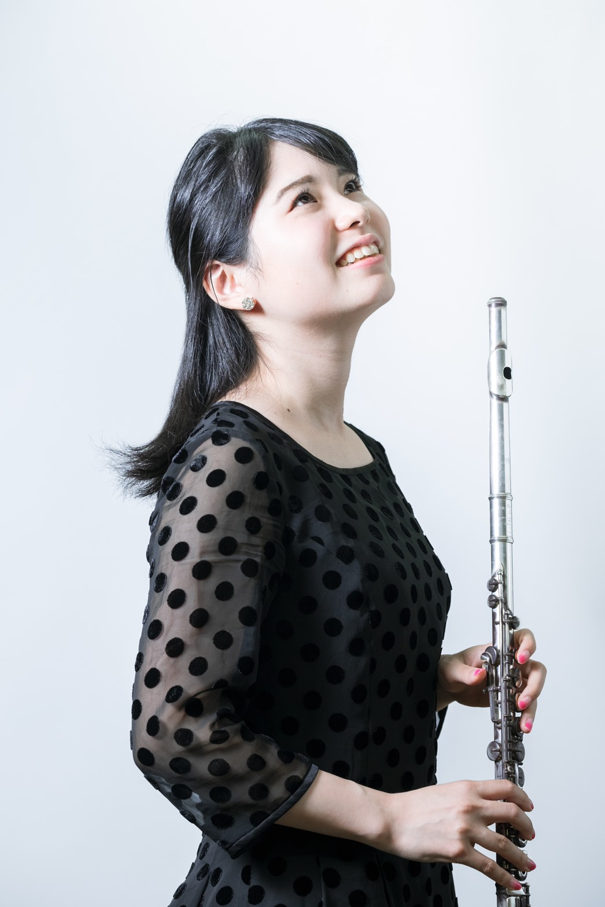

両親ともに音楽家の家庭に生まれ、幼少の頃より音楽教育を受ける。
東京音楽大学器楽科フルート専攻を卒業。洗足音楽大学大学院音楽研究科を卒業。
これまでにフルートを上野由恵、中野真理、斎藤和志の各氏に師事。
ジャズ奏法を北条達子、リック・オヴァトンの各氏に師事。
第33回、第36回霧島国際音楽祭に参加。
エミリー・バイノン、ポール・エドモンド=デイヴィスの各氏のマスタークラスを受講。
従姉妹でソプラノの山本澄奈とユニット、NANONを結成しコンサートを開催。好評を博す。
現在、フルートの指導や演奏活動など精力的に行っている。